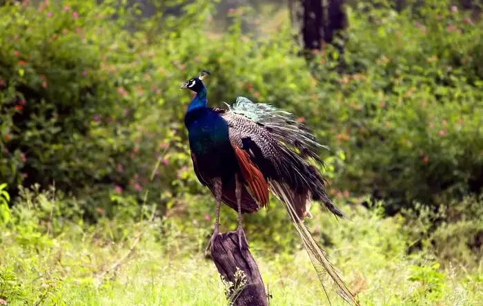

Also known as Puducherry, this is an ideal place for explorers, beach lovers, and experience-seekers interested in French culture and architecture. With an extensive number of romantic places in Pondicherry,this Union Territory reeks of excitement and vibrancy. If you have had too much of Goa already or even if you haven’t, it’s time you witness the charm of Pondy! In addition, traveling from Chennai to Pondicherry has been made much more easier and this is what attracts the young crowd to one of the best tourist attractions in Tamil Nadu and the land of beautiful beaches to rejuvenate and relax.This quaint, charming town of French Colony Pondicherry in Tamil Nadu is renowned for its delectable food and mesmerizing beaches. The spectacular French architecture gives you the feeling as if you have landed in Bordeaux or Montpellier.The White Town area of this town is referred to as the French Quarter.Most of the structures are colonial buildings and were built during the French rule in the Indian subcontinent.

Located in the Nilgiri hills, Mudumalai is one of the best tourist places in Tamil Nadu, which is known for its wildlife persona. For anyone who loves an encounter with nature in the most unique way, the national park here is a must visit.Spot tigers, leopards, golden jackals, and more at Mudumalai National Park. Capture the beautiful landscapes. Interact with elephants at the Theppakadu Elephant Camp.Flora - Mudumalai has three types of forests, i.e., tropical moist deciduous, tropical dry deciduous, and southern tropical thorn. Mixed vegetation types are also present in addition to the tropical moist deciduous forests in regions where rainfall is higher.Tropical dry deciduous forests are limited to the eastern side of the forest but merges into thorn forest where rainfall is low. Southern tropical thorn forest or scrub jungles are present in parts of Avarihalla, Moyar, and Bokkapuram blocks.Mudumalai National Park is a national park in the Nilgiri Mountains in Tamil Nadu in southern India.
If you are someone who’s on a constant lookout for places that are away from the city life, Dhanushkodi is one of the best places to visit in Tamil Nadu. This beach town’s grandeur and beauty make Dhanushkodi one of the best tourist places in Tamil Nadu for your next refreshing getaway! Dhanushkodi is a small town lying in the southern tip of Rameshwaram, Tamil Nadu. The word Dhanushkodi means “Tip of the Bow”. Because of its shape and the confluence of the two seas at the end point Dhanushkodi is called the tip of the bow. The end point is called Arichal Munai in the local language, meaning Erosion point. It's about 20 kilometres (12.5 miles) from Rameshwaram on the Pamban Island and about 30 kilometres (18.5 miles) from Talaimannar in Sri Lanka. The choppy Indian Ocean is on one side and the calmer Bay of Bengal on the other.Dhanushkodi is an abandoned town at the south-eastern tip of Pamban Island of the state of Tamil Nadu in India.
Of all the best tourist places in Tamil Nadu, Hogenakkal is a hometown of gorgeous waterfalls. Situated in Dharampuri, this small village is an absolute hotspot for romantic getaways, a short family vacay, and even an offbeat trip with your friends. Be spellbound by the famous Hogenakkal Falls. Visit the Melagiri Hills. Go temple hopping, and explore the Pennagram Village. Hogenakkal Falls is one of the best waterfalls in India, and among the best places to visit in Tamil Nadu. It is about 146 km from Bangalore and 345 km from Chennai. Also, it is one of the major waterfalls near Bangalore.
This is one place in South India that lets you witness the best of everything at one place. From boasting a beautiful beach, a spectacular wildlife sanctuary to numerous temples & churches, Tuticorin is one of the best tourist places in Tamil Nadu that makes sure that every moment of your holiday outshines the previous one.Visit the Kalakkad Wildlife Sanctuary. Explore the temples, and unwind on the beaches. Relish sweets like Tuticorin macaroons.
Primarily known for two premier institutions, Christain Medical College and Vellore Institute of Technology, Vellore is an ancient city located in the northeastern part of Tamil Nadu. The city has been aptly named the Fort City due to the enchanting fort located in the heart of the city. There are some great hotels in Vellore too where one can stay during the trip here. This is one of the best places to visit in Tamil Nadu.Visit the marvelous fort and St. John’s church. Spend some quality time at Periyar Park.
One of the most offbeat Tamil Nadu tourist places, Pollachi is located down south in Coimbatore. It is a famous filming spot because of its blissful scenery. The place attracts tourists because of famous attractions like Topslip Tiger Reserve and Annamalai Wildlife Sanctuary. The main attractions are the Subramanyar Temple, which invite hundreds of devotees every month. Pollachi also boasts one of the largest jaggery markets in Asia and the largest cattle market in South India. Tourists can indulge in shopping to their heart's content, especially coconuts, jaggery and vegetables.Travelers are voting Valparai, TopSlip and Anaimalai Hills as the best of 3 hill stations near Pollachi. There are 3 hill stations near Mettupalayam a city just 96 km from Pollachi and 1 hill station near Theni which is 190 km distant.
While you may not have heard of Velankanni before like most of the other cities in the state, this place is absolutely worth your time and visit. It is a gorgeous coastal town popular for a spectacular church that was built in the honor of Mother Mary. The distance that one needs to cover from Pondicherry to Velankanni is around 160 kilometres and one can easily find road transport to cover this path.A small hamlet in Tamil Nadu, Velankanni is a popular pilgrim center, especially renowned for the Church of Mother Mary. As a great number of pilgrims turn up here, like Lourdes in France, Velankanni is nicknamed as Lourdes of the East. Velankanni is also famous for its delicate handlooms and silk.
Located on the west bank of the Thamirabarani River, Tirunelveli offers many exciting tourist attractions like breathtaking waterfalls, scenic beauty, temples and much more. Along with many religious places, the city also has some wonderful delicacies you can try.Tirunelveli is a major area for wind-power generation. Most wind-power-generation units in Tamil Nadu are located in Tirunelveli and Kanyakumari Districts.Manjolai is a beautiful hill station located in the Kalakad Mundanthurai Tiger Reserve. The hill station is famous for tea plantations, the Manimuthur Dam and the Manimuthur waterfalls surrounded by natural surroundings making it a perfect attraction for nature lovers.
Dharmapuri, a city often tagged as the land of churches and temples, is one of the greatest places to see in Tamil Nadu. Along with enveloping various places of worship, this town is also home to some of the marvelous wonders of mother nature such as waterfalls, rivers, and more. For those who are seeking to get closer to mother nature and the higher power above us, this place is definitely a steal!. Dharmapuri is an incredibly lively place and is popularly known for its topmost things to do like Karimangalam, Theerthamalai, and Adhiyamankottai.Dharmapuri was called Thagadur during the Sangam era. The name Thagadur is derived from two Tamil words, Thagadu meaning iron ore, and ur meaning place. The name Thagadur was changed to Dharmapuri after the Sangam period, possibly during the period of the Vijayanagara Empire or the period of the Kingdom of Mysore.